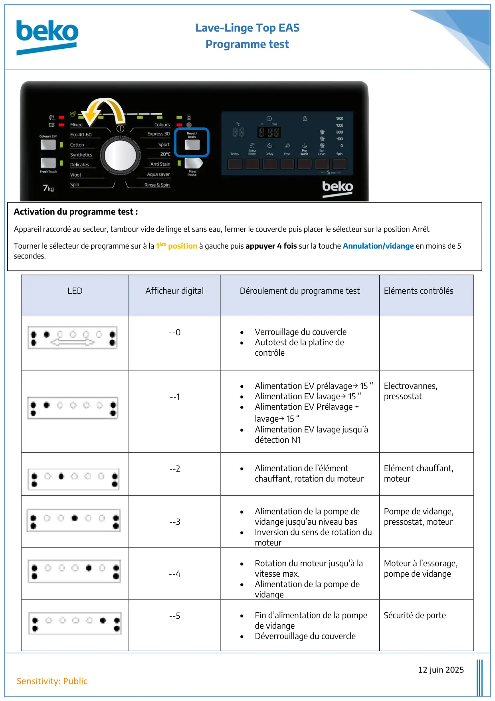
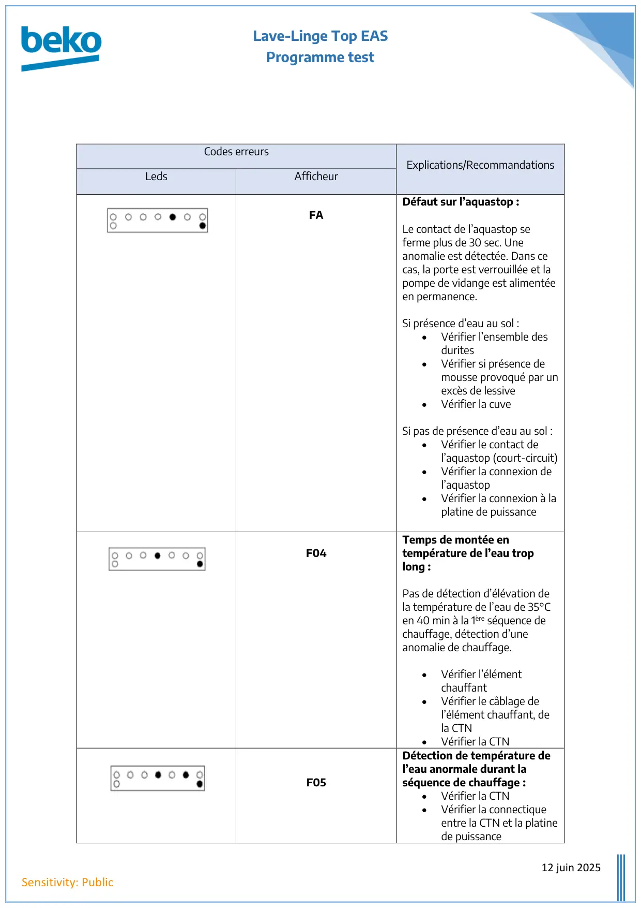
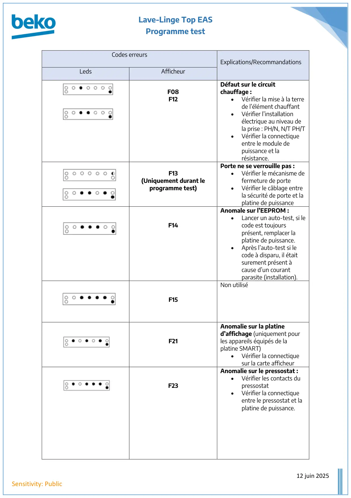
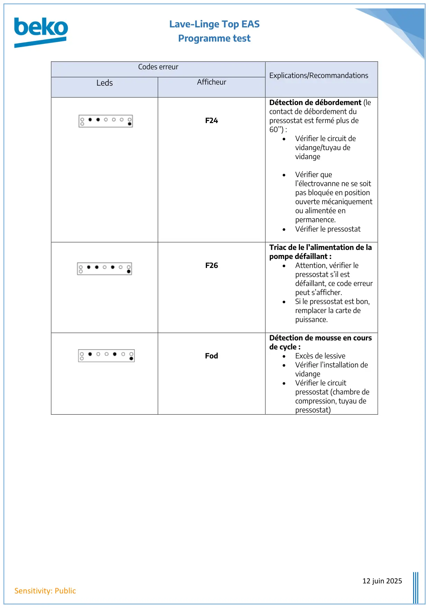

ProgTest lave linge Top

Lave-Linge Top EASProgramme test12 juin 2025Sensitivity: PublicLEDAfficheur digitalDéroulement du programme testEléments contrôlés--0•Verrouillage du couvercle•Autotest de la platine decontrôle--1•Alimentation EV prélavage→ 15 ‘’•Alimentation EV lavage→ 15 ‘’•Alimentation EV Prélavage +lavage→ 15 ‘•Alimentation EV lavage jusqu’àdétection N1Electrovannes,pressostat--2•Alimentation de l’élémentchauffant, rotation du moteurElément chauffant,moteur--3•Alimentation de la pompe devidange jusqu’au niveau bas•Inversion du sens de rotation dumoteurPompe de vidange,pressostat, moteur--4•Rotation du moteur jusqu’à lavitesse max.•Alimentation de la pompe devidangeMoteur à l’essorage,pompe de vidange--5•Fin d’alimentation de la pompede vidange•Déverrouillage du couvercleSécurité de porteActivation du programme test :Appareil raccordé au secteur, tambour vide de linge et sans eau, fermer le couvercle puis placer le sélecteur sur la position ArrêtTourner le sélecteur de programme sur à la 1ère position à gauche puis appuyer 4 fois sur la touche Annulation/vidange en moins de 5secondes.
1 / 4
Lave-Linge Top EASProgramme test12 juin 2025Sensitivity: PublicCodes erreursExplications/RecommandationsLedsAfficheurFADéfaut sur l’aquastop :Le contact de l’aquastop seferme plus de 30 sec. Uneanomalie est détectée. Dans cecas, la porte est verrouillée et lapompe de vidange est alimentéeen permanence.Si présence d’eau au sol :•Vérifier l’ensemble desdurites•Vérifier si présence demousse provoqué par unexcès de lessive•Vérifier la cuveSi pas de présence d’eau au sol :•Vérifier le contact del’aquastop (court-circuit)•Vérifier la connexion del’aquastop•Vérifier la connexion à laplatine de puissanceF04Temps de montée entempérature de l’eau troplong :Pas de détection d’élévation dela température de l’eau de 35°Cen 40 min à la 1ère séquence dechauffage, détection d’uneanomalie de chauffage.•Vérifier l’élémentchauffant•Vérifier le câblage del’élément chauffant, dela CTN•Vérifier la CTNF05Détection de température del’eau anormale durant laséquence de chauffage :•Vérifier la CTN•Vérifier la connectiqueentre la CTN et la platinede puissance
2 / 4
Lave-Linge Top EASProgramme test12 juin 2025Sensitivity: PublicCodes erreursExplications/RecommandationsLedsAfficheurF08F12Défaut sur le circuitchauffage :•Vérifier la mise à la terrede l’élément chauffant•Vérifier l’installationélectrique au niveau dela prise : PH/N, N/T PH/T•Vérifier la connectiqueentre le module depuissance et larésistance.F13(Uniquement durant leprogramme test)Porte ne se verrouille pas :•Vérifier le mécanisme defermeture de porte•Vérifier le câblage entrela sécurité de porte et laplatine de puissanceF14Anomale sur l’EEPROM :•Lancer un auto-test, si lecode est toujoursprésent, remplacer laplatine de puissance.•Après l’auto-test si lecode à disparu, il étaitsurement présent àcause d’un courantparasite (installation).F15Non utiliséF21Anomalie sur la platined’affichage (uniquement pourles appareils équipés de laplatine SMART)•Vérifier la connectiquesur la carte afficheurF23Anomalie sur le pressostat :•Vérifier les contacts dupressostat•Vérifier la connectiqueentre le pressostat et laplatine de puissance.
3 / 4
Lave-Linge Top EASProgramme test12 juin 2025Sensitivity: PublicCodes erreurExplications/RecommandationsLedsAfficheurF24Détection de débordement (lecontact de débordement dupressostat est fermé plus de60’’) :•Vérifier le circuit devidange/tuyau devidange•Vérifier quel’électrovanne ne se soitpas bloquée en positionouverte mécaniquementou alimentée enpermanence.•Vérifier le pressostatF26Triac de le l’alimentation de lapompe défaillant :•Attention, vérifier lepressostat s’il estdéfaillant, ce code erreurpeut s’afficher.•Si le pressostat est bon,remplacer la carte depuissance.FodDétection de mousse en coursde cycle :•Excès de lessive•Vérifier l’installation devidange•Vérifier le circuitpressostat (chambre decompression, tuyau depressostat)
4 / 4